Slow it.
Screw it.
Live.
A real-time chopped & screwed effect for your DAW: pitch down, tape wobble, a chop gate you draw, lush reverb and stereo width, held under a true-peak limiter. Built by NoDAW Labs, the team behind HalfScrew.

One chain. Every move a host parameter.
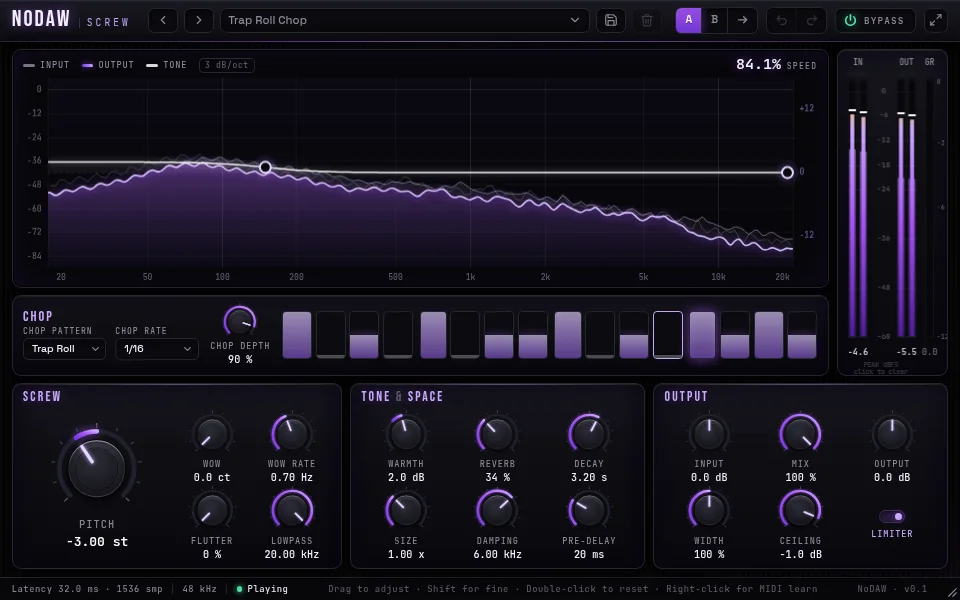
Draw the chop
Click and drag the step gate, pick a rate, set the depth. Your custom pattern saves with the session.
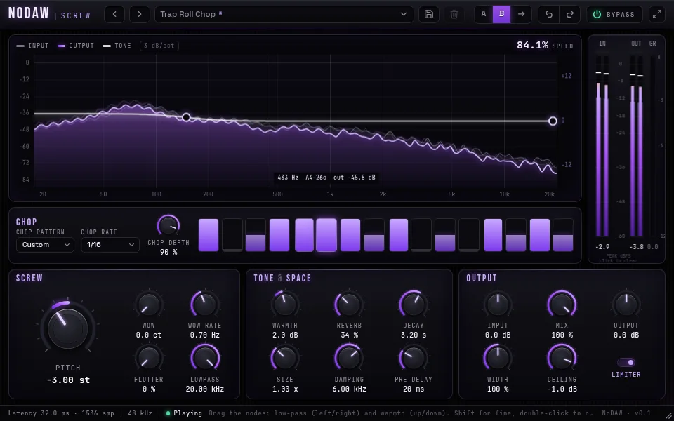
See what you hear
160-band input/output spectrum at 60 fps with peak hold and a cursor frequency/dB readout, plus in/out and limiter meters.
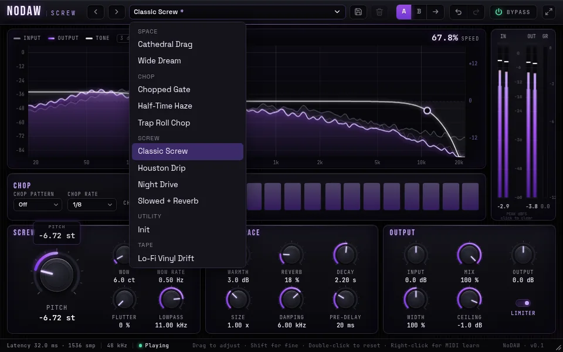
Presets, A/B, undo
12 factory presets, save your own, A/B compare, undo/redo, and right-click MIDI learn on any knob.
Engineered, not just styled.
Latency reported
Pitch, wobble and limiter latency is reported to the host, and the dry path is delay-matched so Mix at 0% stays phase-aligned.
Real-time safe
No allocation or locks in the audio callback. Buffers are sized up front; denormals are guarded.
Sessions restore
Smoothers snap on load, so a saved session opens at exactly the sound you left.
Validated
On the Linux headless build: Steinberg VST3 validator 47/47 passed; clap-validator 36 passed, 0 failed, 8 skipped.
Six plugins. One stack.
Every plugin is CLAP + VST3 in Rust with a WebView UI. Every control is an automatable host parameter, with undo/redo, A/B compare, factory and user presets, right-click MIDI learn and typed values. Latency is constant and reported exactly, and the audio callback never allocates or locks.
Four modules.
Any order.
A modular channel strip: Saturator, 7-band EQ, Spatial and Reactor in a chain you reorder by dragging the module headers, each with its own power switch, then a master section.


Drag the EQ on the analyser
Seven bands: bands 1 and 7 switch between shelf and 12 dB/oct cut, the rest are bells. Drag the nodes on the spectrum.
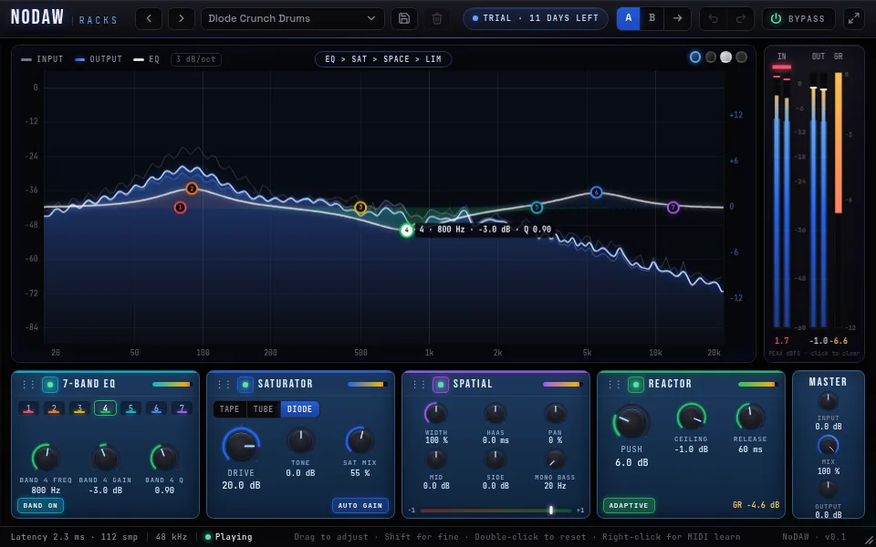
Tape, Tube or Diode
The Saturator has three curves with 2× oversampling, plus Drive, Tone, Sat Mix and Auto Gain.
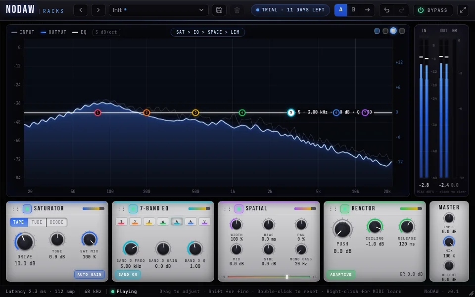
Four skins
Cobalt, obsidian, silver and plastic, with a spectrum, the EQ curve, in/out meters and gain reduction.
Spatial
Width, Haas, Pan, Mid and Side gain, and Mono Bass below a set frequency, with a correlation meter.
Reactor
A limiter with a fixed 1.5 ms lookahead and true-peak detection: Push, Ceiling, Release and Adaptive release.
Master
Input, Mix and Output, with bypass and mix sample-aligned to the latency-delayed dry signal.
Twenty Space Recipes.
In your DAW.
Amp, a 7-band EQ, sub shelf and filters feed three parallel returns: a ping-pong delay, an FDN reverb and a stereo flanger. The 20 Space Recipes from the browser prototype are the factory presets.
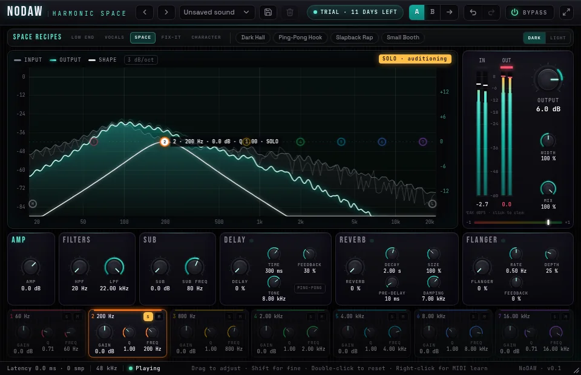
Band Solo and Mute
Solo auditions a band’s region with a crossfaded band-pass (or low/high-pass on the shelves). Mute takes the band to −36 dB.
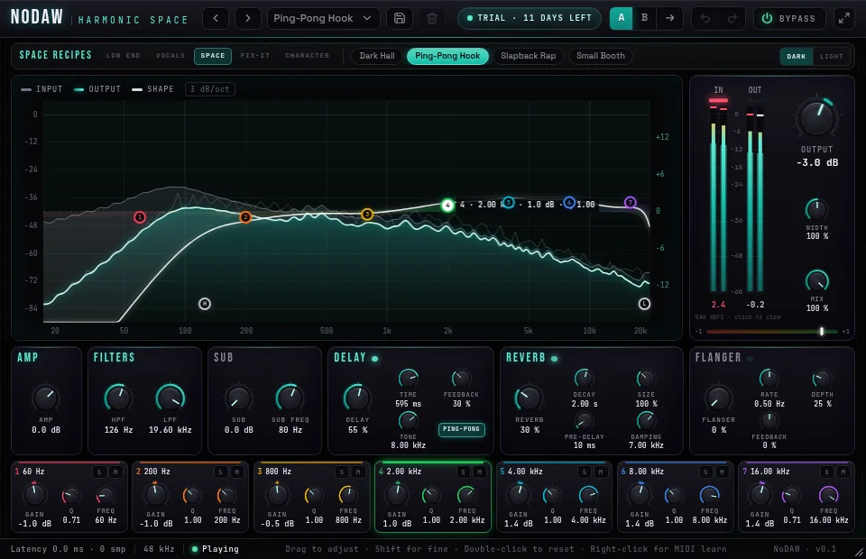
Recipes by family
Presets are grouped as Vocals, Low end, Space, Character and Fix-it, converted with the prototype’s own knob mappings.
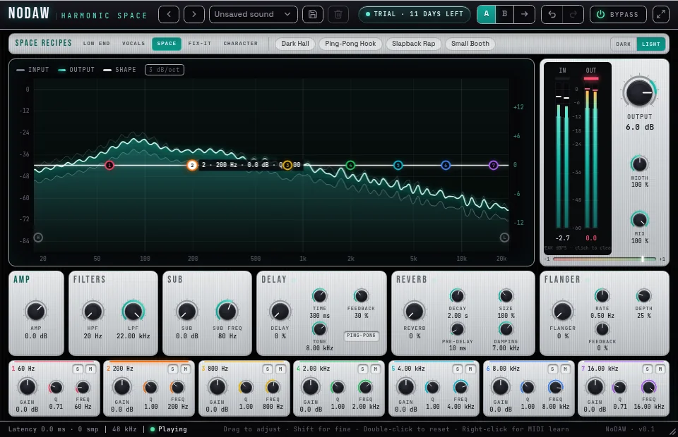
Dark or brushed aluminium
The analyser shows the whole shape with a node per band plus the filter nodes, effect activity LEDs and a correlation meter.
EQ
60 Hz low shelf, five bells and a 16 kHz high shelf, then 12 dB/oct high- and low-pass.
Reverb
An FDN reverb with decay, size, pre-delay and damping.
Delay
A feedback delay with tone and ping-pong, alongside a stereo flanger.
EQ that moves
only when it should.
Seven bands in series. Each is a Bell, Low Shelf or High Shelf with its own dynamics: static, compress when the band goes over the threshold, or expand to lift it.

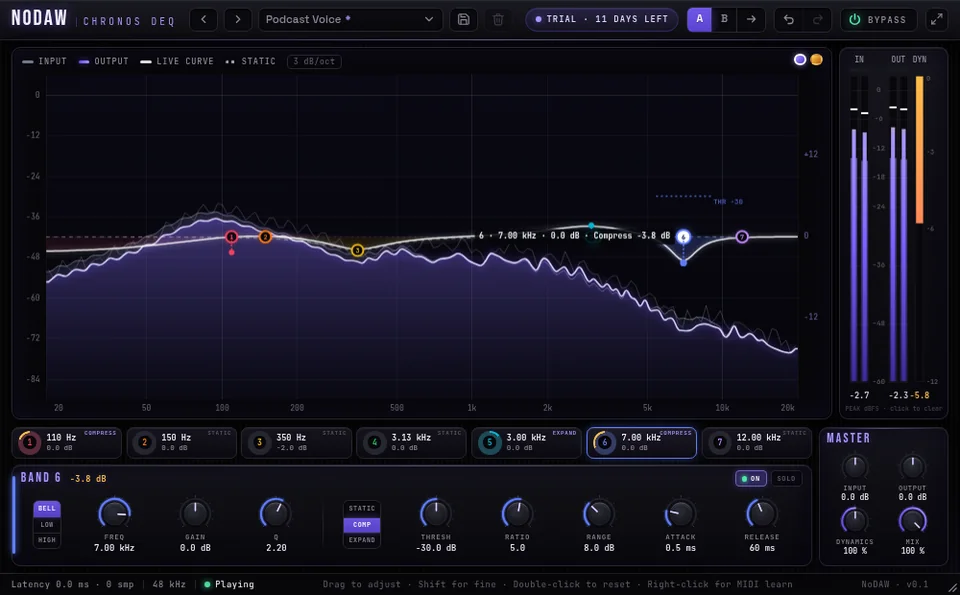
Per-band dynamics
Threshold, Ratio, Range up to 24 dB, Attack and Release on every band, with node rings showing each band’s live gain.
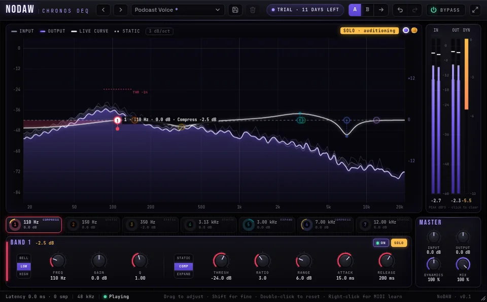
Solo any band
Audition a band on its own. An idle band is bit-transparent, and gain changes are zipper-free.
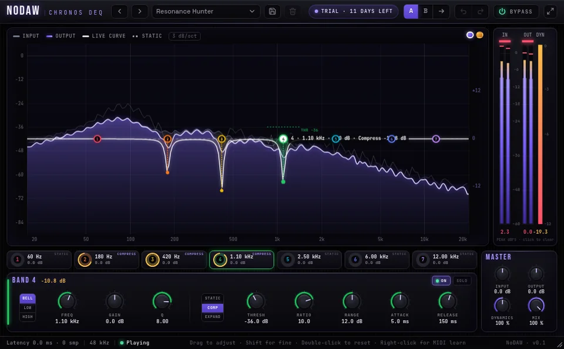
See the move
The live curve, the dashed static curve, a threshold marker and band chips with ring meters. The GR meter shows the deepest cut.
Master
Input, Output, Mix and a Dynamics amount from 0 to 200 % that scales every band’s range, capped at 24 dB.
How a band works
Each band is x + (G−1)·F(x), so a band that is doing nothing passes audio untouched.
Zero latency
The bands are minimum-phase IIR filters, so nothing is added to your session delay.
Bend time.
Pitch stays yours.
A time warp synced to your host tempo, from half-time at 50 % to double speed at 200 %, with a pitch bend of ±12 semitones that is independent of time.

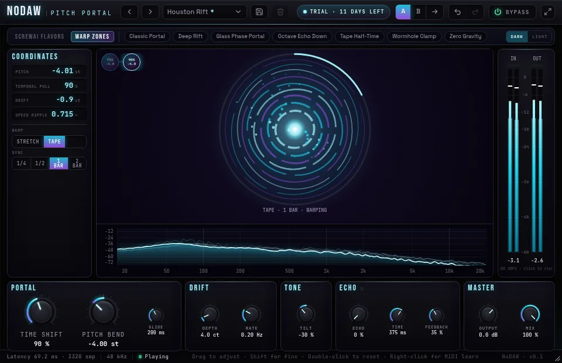
Stretch or Tape
Stretch keeps the pitch with WSOLA grains aligned by cross-correlation. Tape bends pitch with the speed, like a varispeed deck.
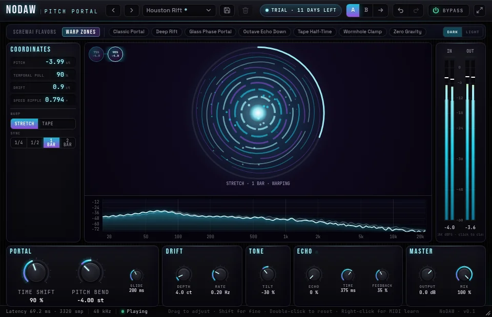
Warp Zones and ScrewAI Flavors
14 presets: the prototype’s 5 Warp Zones and 5 ScrewAI Flavors, plus extras. Here time and pitch are independent.

A portal that reads the engine
The rings turn with time and warp with pitch. The Dimensional Coordinates show the pitch actually applied, temporal pull, drift and speed ripple.
Sync periods
Time warps inside each period of 1/4, ½ bar, 1 bar or 2 bars. The longest period is 4 s; longer bars are clamped.
Effects
Drift is a wandering micro-pitch with its own rate, Tone is a tilt, and Echo is a return on the shifted signal.
Dimensional History
A bubble per edit: click one to go back. The last 20 are kept. Dark or light look.
Weave the spectrum
through time.
Morph your signal toward its own past or a captured snapshot, freeze a moment and sustain it, or smear it into a spectral cloud, all shown on a 3D spectrum you can orbit.

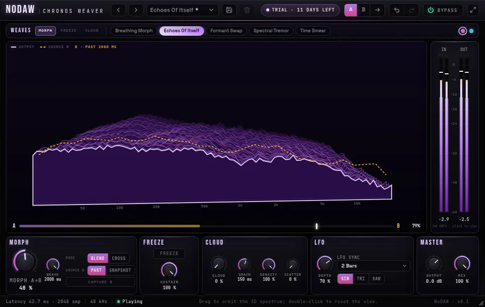
Drag to orbit
A 3D spectrum of frequency, time and level, with source B on the front edge and a morph track showing the knob and live LFO.

Freeze
Capture the spectrum and sustain it with phase-vocoder phase advance, from about 1 s to infinite.

Nebula or ice
Two colourways. Cloud smears each bin in time (Grain 5–2000 ms), gated by Density and phase-scattered.
Source B
Past is the signal’s own spectrum Weave ms ago. Snapshot is a capture you take with Capture B, saved with the session.
Blend or Cross
Blend is a log-magnitude morph. Cross puts B’s spectral envelope on A’s fine structure.
Morph LFO
Depth, tempo sync from ¼ to 4 bars, and sine, triangle or ramp shapes.
Where all six stand today.
- BuiltVST3 + CLAP for Windows x64, with a Linux headless build for CI tests and validators.
- ValidatedPublished validator results so far cover Screw only. The other five run the same kit and test suite, but their validator logs are not published yet.
- Planned14-day full-featured trial per plugin, then activation with a license key.
- Not yetUnreleased and not for sale. No price has been set.
- Not yetNot tested in a real DAW or on a Windows run. Installers are unsigned.
- Heads upScreenshots come from the plugin UI in a mock host with synthetic spectrum data.